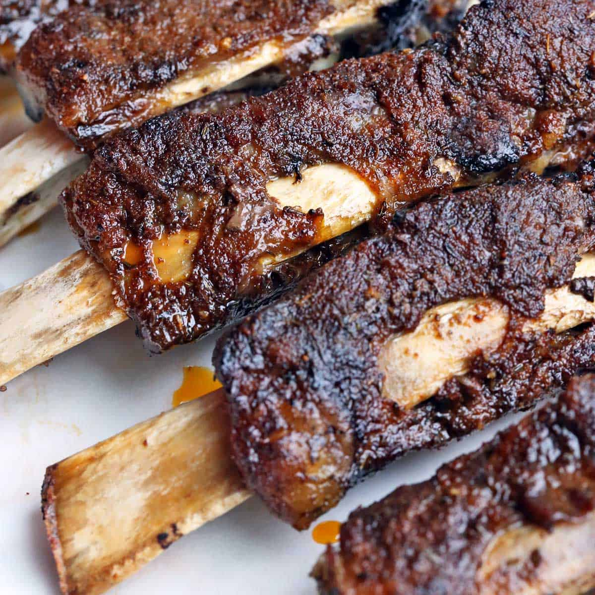

Slow Cooker Ribs

Description
The best slow cooker ribs you will ever make on game day night. When everyone comes over for the Super Bowl you will absolutely deliver the best ribs they've ever
had. To their surprise these ribs are made in your every day slow cooker.
Ingredients
- 3 pounds baby back ribs, trimmed
- salt and ground black pepper, to taste
- 1/2 cup water
- 1/2 onion, sliced
- 1 clove garlic, minced
- 1 (18 ounce) bottle barbeque sauce
Directions
- Season ribs with salt and pepper.
- Pour water into slow cooker. Layer the ribs into the slow cooker. Top the ribs with onion and garlic.
- Cook on High for 4 hours (or Low for 8 hours).
- Preheat oven to 375 degrees F (190 degrees C).
- Transfer ribs to a baking sheet. Discard onion and garlic. Coat ribs with barbeque sauce.
- Bake in preheated oven until the sauce caramelizes and sticks to the meat, 10 to 15 minutes.
Suggestions
Discover the the best slow cookers to buy for making your favorite slow cooker recipe.